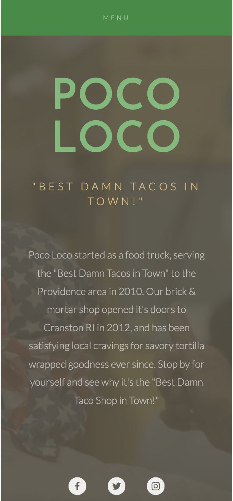
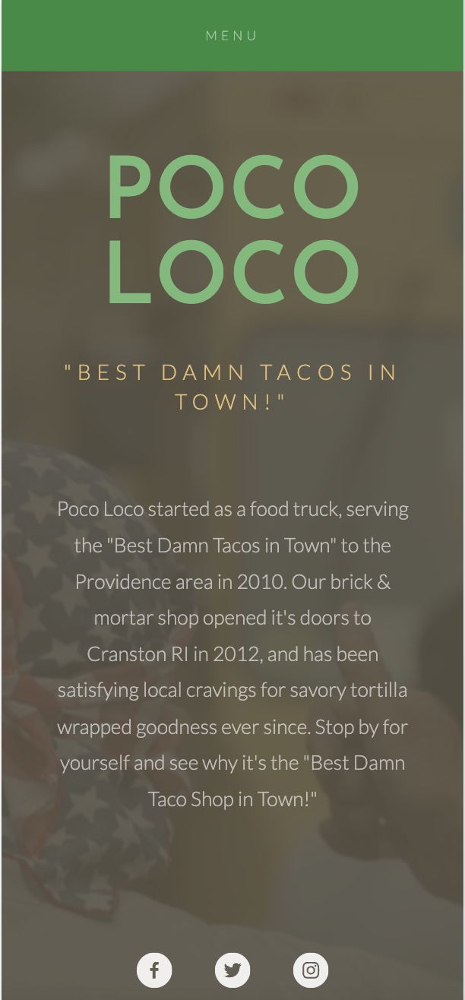

A Website Redesign -- Poco Loco
Poco Loco is a local food business in Providence that mainly serves tacos. It has a relatively small-scale business, with one brick-and-mortar store and several flexible food trucks. I find its official website kind of lacking in design, usability and accessbility. In this project I try to analyze and build a redesigned version of this website.

 

Problems
Usability
- I think the website is lacking in navigation usability.In the desktop and tablet version of this website, the navigation items are at the top left corner, in very small font size similar to the description paragraph in the middle, so it's likely that new users cannot notice them right away. And the navigation items does not seem interactive enough until users hover the mouse on them. Therefore, it can be confusing for new users to find if this website has several pages and how to switch pages. In the phone version, the "menu" is also very small and hard to notice on top of the screen.
- I think the website also has problems in readablity and clarity in content. The main description paragraph on the Welcome page is especially small in font size, making it somewhat difficult for some users to read. Also, as a relatively small-scale food business, and as the website is mainly used for introduction instead of service purposes such as ordering or reserving, I think users expect to see what they offer directly. However, the website only provides little information such as "tacos", without supporting images. The website is not efficient enough to users. Users can only find the location and relevant information in the Contact page. As their food is served in the brick-and-mortar store and food trucks, I think it's important to let users know their purpose and location directly. Clicking to a Contact page does not seem efficient enough for a restaurant's website.
Learnability
- I think the website is also lacking in learnability. The website does not provide enough context to guide users to check their "Contact" page in order to find their restaurant's location, and their food trucks' locations are not on the "Contact" page but only on the "The Truck" page. So it may take some trials and errors for new users to understand what Poco Loco's business is about, and where to find them.
Memorability
- In terms of memorability, I think it may not a big issue, mainly revolving around the different pages users need to look for store and truck locations.
Accessbility
- When using the WAVE tool to check this website, 3 errors are detected. The errors are "Empty Link Error", found at the 3 social media icon links. It means the function or purpose of the link is not presented in text to the user. This can introduce confusion for keyboard and screen reader users. I think it does bring accessbility problems and should be fixed by adding text explanation to help certain users understand this link.
Visual Design Style Guide
Low-fidelity Wireframing

High-fidelity Wireframing